Modelica Newsletter 2012-2
Newsletter #2 of 2012 (News from Modelica Association, from Modelica related projects and from Modelica tool vendors)
Table of Contents
- New Modelica Association Board
- Modelica Association News
- Educational News
- Modelica and SystemModeler Training
- Dymola and Modelica Training from Modelon
- Modelica Course with OpenModelica
- Dymola and Modelica Training from Claytex
- Modelica Tutorial in Dresden on September 18, 2012
- Project News
- IEA project for building and community energy systems
- DYNCAP - Modelling and Simulating the Dynamics of CO2 Capture
- Library News
- TIL Suite - Simulates Thermal Systems. Version 3 Release
- Engines and Powertain Dynamics Libraries updated
- Modelica Libraries from BAUSCH-GALL GmbH
- Electric Power Library 1.0
- Engine Dynamics Library 1.0
- Hydro Power Library 1.0
- Liquid Cooling Library 1.0
- Thermal Power Library 1.0
- New SimulationX Library Package: Green Building
- Vendor News
New Modelica Association Board
Dear Modelica interested,
At the Modelica Association Meeting on Feb. 29, 2012, the new MA Bylaws were approved. As indicated in the last newsletter, as a result the working process of the Modelica Association will be changed and long term development activities will now be organized in MA Projects (MAPs). MAPs operate under their own rules and MAP members need not be members of the Modelica Association, with exception of the MAP leader.
At the last Modelica Association Meeting on May 8, 2012, the following three MAPs and their rules have been approved (for more details, see the MAP description):
| Modelica Language Further development of the Modelica language. This MAP is headed by Martin Otter from DLR-RMC. |
| Modelica Libraries Further development of the Modelica Standard Library (and other free libraries from the Modelica Association). This MAP is headed by Anton Haumer from AIT. |
| Functional Mockup Interface Further development of the FMI standard, especially for model exchange and co-simulation. This MAP is headed by Torsten Blochwitz from ITI. |
At the last meeting, also a new Modelica Association Board has been elected for the next two years. In order to enhance und improve strategic topics, the MA Board has been extended with new positions:
| Chairperson | Martin Otter (DLR-RMC, Oberpfaffenhofen) |
| Vice-Chairperson | Peter Fritzson (Linköping University, Linköping) |
| Secretary | Michael Tiller (Dassault Systèmes, Velicy) |
| Treasurer | Jonas Eborn (Modelon AB, Lund) |
| Marketing | Hubertus Tummescheit (Modelon AB, Lund) |
| Quality and Processes | Kilian Link (Siemens AG, Erlangen) |
| Technology | Hilding Elmqvist (Dassault Systèmes AB, Lund) |
| MAP Modelica Language | Martin Otter (DLR-RMC, Oberpfaffenhofen) |
| MAP Modelica Libraries | Anton Haumer (AIT, Vienna) |
| MAP FMI | Torsten Blochwitz (ITI, Dresden) |
The MAP leaders are included in the MA Board in order that all relevant information is distributed between all parts of MA, and in order that all the different MA parts can influence and participate on overall decisions. The other three new positions have the following tasks:
| Marketing | Responsible for marketing the results of the MA projects, in particular, to position Modelica and FMI as a leading brand in modeling and simulation technology. This implies organizing and promoting articles in journals and magazines, advertising, and advertising material (flyers, posters, videos, Google ads, web pages, ...). |
| Quality and Processes | Improve the processes of the MA projects for the purpose of improving quality of the project results, in particular for the Modelica language specification, the Modelica libraries and FMI. Furthermore, setting up testing processes regarding regression, interoperability and conformance to the standards. This implies also organizing externally paid work for these topics. |
| Technology | To provide technical guidance and coordination to the MA projects in order that coherent technology is used and developed in the MA projects. |
We expect that these changes will considerably improve the already successful operation of the Modelica Association in the future. Note, the MA Board can be reached via its email address board@Modelica.org.
If you have interesting news for the Modelica community, please contact the newsletter editor (Michael Tiller) for information on how to submit newsletter articles for possible inclusion in the next newsletter. The deadline for articles for the next newsletter is Oct. 15, 2012.
Best wishes from
Martin Otter (Chairman of the Modelica Association)
Modelica Association News
Modelica 3.3 Released
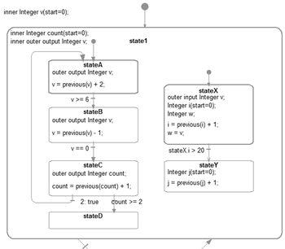
The new version 3.3 of the Modelica language was released on May 9, 2012. The specification document is available here in pdf format. This release is backwards compatible to the previous 3.2 release. The essential changes with respect to 3.2 are:
- Synchronous language elements
Language elements have been added to describe synchronous behavior suited for implementation of control systems. For this, a new base type "Clock" is introduced to describe the ticking of periodic and non-periodic sampled data systems, with the ability to precisely define time synchronization via sub-, super-, and shift-sampling. Clocked variables and equations are now uniquely associated with one clock, mostly automatically via clock inference (e.g., if a variable in one equation belongs to a clock, then all variables in this equation, and the equation itself belong to this clock as well). These synchronous language elements allow many more checks at compile time and therefore lead to increased correctness of control systems implementation with respect to previous Modelica releases. Furthermore, full equations can now be used in sampled data systems, and continuous-time equations can be automatically discretized and transformed to clocked equations (e.g., as before, a non-linear continuous-time model of a plant can be automatically inverted for a feedforward control partition but can now, with Modelica 3.3, be transformed to a discrete-time partition that can be directly utilized in an embedded system). - State machines
Language elements have been added to define state machines (see figure). These state machines have a similar modeling power as Statecharts, but have the important feature that at one clock tick, there is only one assignment to every variable (for example, it is an error if state machines are executed in parallel and they assign to the same variable at the same clock tick; such errors are detected during translation). Furthermore, it is possible to activate and deactivate blocks at a clock tick. The semantics of the state machines is basically those from Lucid Synchrone 3.0 with some Modelica-specific adaptations: (note, safety critical control software in aircraft are often defined with such kinds of state machines):
Any block instance without continuous behavior can be used as a state of a state machine. A transition is introduced as a new kind of coupling between states. A set of block instances coupled by transitions form a state machine. One of the blocks is marked as initial state. State machines can be hierarchical and can exist in parallel. A transition has an associated transition condition. When a state is activated, all its hierarchical subcomponents are activated and vice versa. A transition has a reset attribute which states, when enabled, that after such a transition is made, the destination state is reset meaning that all sub-state machines are restarted in their initial state and all state variables are reset to their start values. Special semantic rules are introduced to maintain the single assignment rule of Modelica by analyzing that multiple assignments can only occur in mutually exclusive states of the same state machine. A similar rule is introduced to allow several mutually exclusive sources of data in the block diagram. - New built-in operator spatialDistribution
This operator allows the description of one-dimensional plug-flow and other applications which involve the modeling of variable-speed transport of properties. One option to model this infinite-dimensional system is to approximate it by differential equations, but this requires a large number of state variables and might introduce either numerical diffusion or numerical oscillations. This new built-in operator keeps track of the spatial distribution of z(y, t), by suitable sampling, interpolation, and shifting of the stored distribution. In this case, the internal state of the operator is hidden from the integrator. - New built-in operator getInstanceName
This operator allows models to access the actual name of each instance. Typical use is in diagnostic messages, in order to more precisely define in which part of the model an issue occurred. - Many additional smaller improvements. For details, see Appendix E.1 of the specification.
This article is provided by Martin Otter (DLR-RM)
Modelica'2012 Conference
The 9th International Modelica Conference will be held in Munich, Germany on September 3 - 5, 2012.
What follows is a summary of the event (see the complete preliminary program of the conference for more details).
The Modelica Conference is the main event for users, library developers, tool vendors and language designers to share their knowledge and learn about the latest scientific and industrial progress related to Modelica, to the Modelica Association and to the Functional Mockup Interface. The last Modelica conference in 2011 was visited by 325 participants from 23 countries, and we expect a similar size at this conference. Highlights of the Conference:
- 80 regular papers and 23 poster papers
- 8 tutorials (3.5 hours each, descriptions)
- 10 vendor sessions (45 min. each) where the latest news of Modelica and FMI tools are presented
- 16 exhibitors in the exhibition area
Note, the deadline for early registration with a reduced fee is July 1, 2012.
The conference is located at the Veranstaltungsforum Fürstenfeld in Fürstenfeldbruck near Munich. This venue was built as annex to an ancient monastery but is fully modernized. Spacious halls enable four parallel sessions and renovation of the historic buildings creates a cozy atmosphere for the associated social events.
Munich is a city with plenty of attractions. You may taste the Bavarian beer in the English Garden or visit BMW World near the Olympiapark. Fürstenfeldbruck itself is located in the "Fünfseenland" where five beautiful lakes offer a wonderful area for recreation close to nature.
We have created a special page for more information on travel and accomodations.
This article is provided by Martin Otter (DLR-RM) and Dirk Zimmer (DLR-RM)
FMI Compliance Checker
In order to ensure consistent implementations of the Functional Mock-up Interface (FMI) standard in different tools, the Modelica Association is funding the development of an open source FMI compliance checker. This program checks Functional Mock-up Units (FMUs) for compliance to FMI 1.0 and, in a future version, to the upcoming FMI 2.0. The program takes as its input an FMU and validates binary FMUs for Windows and Linux. In particular, the correctness of the XML file and DLL/so functions contained in FMUs are checked, and in addition, the program simulates the FMU with an explicit Euler method and will write a validation report. The compliance checker for FMI 1.0 will be available to the public in mid of July 2012 under the BSD license. The MA thereby expects to simplify the process of detecting whether a tool exports a non-compliant FMU, or a tool cannot simulate a standard compliant FMU, in order to help tool vendors to improve their FMI support.
Following an open call for quotations resulting in five offers, the MA members decided to accept the offer from Modelon AB, Lund, Sweden, for the implementation.
This article is provided by Martin Otter (DLR-RM) and Torsten Blochwitz (ITI GmbH)
Educational News
Modelica and SystemModeler Training
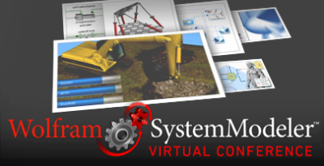
Wolfram now offers the following three free on demand courses as well as recordings from the virtual conference held June 19, 2012:
- Wolfram SystemModeler: Quick Start
Find out how you can create and analyze models of electrical, mechanical, thermal, biochemical, and other systems with SystemModeler. This example-driven presentation will teach you how to develop models of complex systems using drag and drop. - Wolfram SystemModeler: Analysis and Design with Mathematica
Get a deeper understanding of model behavior using Mathematica. This course focuses on analyzing models and simulation results with Mathematica. Learn about the link between Mathematica and SystemModeler and get an overview of the powerful Mathematica functionality relevant to modeling and analysis. - Wolfram SystemModeler: Modelica Language Concepts
This course provides an introduction to Modelica—a language for modeling dynamic systems. Topics covered include the connection principle, the connector orientation rule, available connectors in the Modelica Standard Library, language concepts, hierarchical structuring, and more. - Wolfram SystemModeler Virtual Conference 2012
The conference featured a keynote by Dr. Roger Germundsson, Director of Research & Development, and several courses and example-driven workshops, followed by an open chat. Videos and recordings from the event can now be viewed online.
This article is provided by Jan Brugård (MathCore)
Dymola and Modelica Training from Modelon
Modelon offers training for Dymola, Modelica, model libraries, and modeling principles from our training sites in Sweden, Germany, and USA. We offer open classes with our standard courses as well as closed custom training at customer sites world-wide.
Upcoming Events
- Sweden, September 10-14
- Germany, September 17-21
- USA, October 22-26
Our popular Dymola Introduction Course is developed to facilitate accelerated learning and high productivity with the technology leading Modelica toolchains. See full course listing and register at www.modelon.com/training.
This article is provided by Magnus Gäfvert (Modelon AB)
Modelica Course with OpenModelica
A six day Modelica course using OpenModelica is organized in September 2012, starting September 10th, at Linköping University, Linköping, Sweden. The focus is on learning the Modelica language, basic modeling techniques, and creating libraries. Short introductions will also be given to symbolic model transformations with MetaModelica, multi-core simulation of Modelica models, and model-based optimization with OMOptim.
Contact Peter Fritzson (peter.fritzson@liu.se) if you are interested in attending. Participants from both industry and academia are welcome. The course will be given in English, and will be organized in a concentrated way to facilitate traveling. Attendance is free of charge for members and employees of organizations in the Open Source Modelica Consortium.
For a detailed schedule and course description look here.
This article is provided by Peter Fritzson (Linköping University)
Dymola and Modelica Training from Claytex

Claytex are organising the following Dymola and Modelica training courses to be held at our offices in the UK. These courses are open to everyone but we also offer closed, bespoke training to individual customers.
- 14-15 August - Introduction to Dymola and Modelica
- 16 August - Advanced Modelica
- 16-17 October - Introduction to Dymola and Modelica
- 18 October - Advanced Modelica
For more details on these courses please see: http://www.claytex.com/engineering-services/training/.
This is provisional calendar and subject to change, please contact chris.denly@claytex.com to confirm dates and availability.
This article is provided by Mike Dempsey (Claytex Services Limited)
Modelica Tutorial in Dresden on September 18, 2012
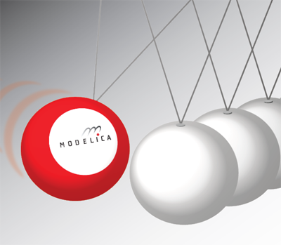
In this one day tutorial, the Fraunhofer IIS/EAS experts introduce the basics of Modelica. They discuss the concepts, the use in modeling, the handling of established simulators and the evaluation. This tutorial is the ideal introduction into Modelica.
Who should take part?
Users and everybody interested in Modelica with no or just a little knowledge of the language. The tutorial is of special interest for engineers of all disciplines, mathematicians and nature scientists.
It is held on September 18, 2012 at the EAS Division of Fraunhofer IIS in Dresden. Up to 10 participants are welcome. The tutorial language is German. More information can be found on www.eas.iis.fraunhofer.de.
This article is provided by Christoph Clauss (Fraunhofer)
Project News
IEA project for building and community energy systems
The International Energy Agency, under the implementing agreement on Energy Conservation in Buildings and Community Systems, approved the five-year Annex 60 proposal "New generation computational tools for building and community energy systems based on the Modelica and Functional Mockup Interface standards." Austria, Belgium, France, Germany, Ireland, the Netherlands and the USA are already expected to participate. Italy, Sweden, Switzerland and the UK are currently in the process of forming a team.
The project aims to share, further develop and deploy free open-source contributions of currently uncoordinated activities in modeling and simulation of energy systems of buildings and communities, based on Modelica and Functional Mockup Interface standard. The project will create and validate tool-chains that link Building Information Models to energy modeling, building simulation to controls design tools, and design tools to operational tools. Invention and deployment of integrated energy-related systems and performance-based solutions for buildings and communities will be accelerated by extending, unifying and documenting existing Modelica libraries, by providing technical capabilities to link existing building performance simulation tools with such libraries and other tools through the Functional Mockup Interface standard. The technology will allow optimized design, analysis and operation of multi-domain systems as posed by building and community energy systems. It will also allow using models across the whole building life cycle to ensure realization and persistence of design intent.
In the first phase from June 2012 to June 2013, a work plan will be created. Upon approval of the work plan there will be a three year R&D phase, followed by a one year reporting phase. For further questions, please contact the operating agents, Michael Wetter (MWetter@lbl.gov) and Christoph van Treeck (treeck@e3d.rwth-aachen.de).
This article is provided by Michael Wetter (Lawrence Berkeley National Laboratory)
DYNCAP - Modelling and Simulating the Dynamics of CO2 Capture
Capturing the dynamics of power plant processes is getting into the focus of energy providers, power plant suppliers and grid operators all over the world. the reason for this trend is the increasing capacity of fluctuating renewable energy sources like wind and solar energy, which is especially challenging in small markets and isolated networks. In this context, system simulation can help to increase the load following capacity of power units by optimization of both, the control systems and the process set-up. As part of the German research project DYNCAP the Modelica library ClaRaCCS will be developed. Because the energy and mass storage of fuel preparation and steam generation is essential for process evaluation and control optimization, ClaRaCCS will provide models of different complexity for:
- Coal mills featuring classifier-dependent mass and energy storage
- Burners and flame rooms featuring stoichiometric and non-stoichiometric combustion and heat transfer due to convection and radiation
- Pipes, heat exchangers and spray injectors including transmission line-based approaches for long connection pipes
- Walls and headers in order capture the heat capacities of thick-walled components allowing analysis of thermally induced wear
- Applying this set of basic components various steam generator configurations can be defined and used for detailed analysis of transients.
The development of ClaRaCCS is carried out in cooperation with Hamburg University of Technology, TLK-Thermo GmbH and XRG Simulation GmbH. The research project DYNCAP is funded by Germany's Federal Ministry of Economics and Technology (Reference number 03ET2009), started in March 2011 and will end in August 2014. The resulting Modelica library will be made freely available.
For further details please contact info@xrg-simulation.de.
This article is provided by Stefan Wischhusen (XRG Simulation GmbH)
Library News
TIL Suite - Simulates Thermal Systems. Version 3 Release
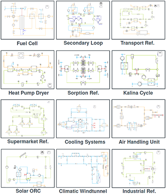
Software package TIL Suite contains libraries for steady state and transient simulation of thermodynamic systems.
TIL Suite consist of the following components:
- TIL - model library for components of thermal systems
- TILMedia - model library providing thermo-physical properties
- TILFileReader - Imports tabular data from files
Core Features of new Release Version TIL 3 are:
- Significant increase in computing speed and stability even in highly dynamic simulations, flow reversal and switching between flow paths.
- Analytically and numerically optimized gas side concepts allowing for freezing of contained water as well as condensation of various substances.
- Property data and component models have been structurally fully extended to mixtures, e.g. for modeling of fuel cell systems, exhaust gas heat exchangers or Kalina-processes with ammonia/water.
TIL Sample Systems:
Among others TIL Suite has be applied to model the following systems: Vapor Compression, Ejector Heat Pump, Fuel Cell, Secondary Loop, Transport Refrigeration, Heat Pump Dryer, Sorption Refrigeration, Thermoelectric, Kalina Cycle, Supermarket Refrigeration, Solar Organic Rankine, Cooling System, Air Handling Unit, Climatic Windtunnel, Industrial Refrigeration.
Further details at www.tlk-thermo.com
This article is provided by Matthias Kwak (TLK-Thermo GmbH)
Engines and Powertain Dynamics Libraries updated
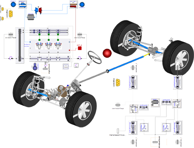
Claytex have released new versions of the Engines Library and Powertrain Dynamics (PTDynamics) Library for Dymola 2013 and Modelica 3.2. These releases are made available as part of an update to all our Modelica products including the FlexBody, VDLMotorsports and XMLReader libraries.
The Engines Library features improvements targeted at delivering real-time simulation using the mean-value engine models including the mechanics and full air-path. Significant improvements have also been made to the turbocharger models and the crank-angle resolved combustion models.
The Powertrain Dynamics Library has been enhanced with a wider range of driveline and differential templates and features new models for a dynamic torque converter, wet clutches and chain drives. A new option for the linear analysis of powertrain models has also been introduced to determine the natural frequency and modal response of complex powertrain models.
Together the Engines and Powertrain Dynamics library deliver comprehensive solutions for the modelling of automotive powertrains. The libraries are built on the VehicleInterfaces model architecture standard and extend this to provide a flexible and powerful set of templates for powertrain modelling whilst ensuring compatibility with other Modelica automotive libraries. The range of applications include control development, transient performance prediction, driveability assessment and drive cycle performance.
This article is provided by Mike Dempsey (Claytex Services Limited)
Modelica Libraries from BAUSCH-GALL GmbH
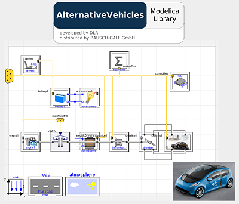
Modelica Libraries Updates
The AlternativeVehicles Library is developed by DLR for simulating unconventionally powered vehicles.
Version 1.1 of this library was released in May. It includes additionally:
- Models for a parallel hybrid architecture with example vehicle MB S400h
- Example for conventional vehicle MB S350
- Component test benches for batteries, combustion engines and electric drives
The library has been upgraded to Modelica Standard Library 3.2 and includes an improved tutorial and documentation.
For more information see
AlternativeVehicles Library
at our homepage.
The HumanComfort Library is developed by XRG Simulation GmbH for use in
automotive, aircraft and building simulation.
Version 1.2 of this Library will be released early in September. Amongst other new
developments it will include:
- condensation on cold surfaces (cooling ceilings, windows)
- new bungalow example
- new automotive cabin example
- more convective heat transfer and pressure drop models
For more information see HumanComfort Library at our homepage.
Hydronics Library from XRG has been upgraded to Dymola 2013 in version 1.9.3.
Our range of Modelica Libraries is available at
http://bausch-gall.de/molib.
If you need more information, please contact
info@bausch-gall.de.
This article is provided by Ingrid Bausch-Gall (BAUSCH-GALL GmbH)
Electric Power Library 1.0
Electric Power Library (EPL) from Modelon provides a framework for efficient modeling, simulation and analysis of electric power systems. The models can be used for simulation of steady state as well as transient operation of power systems. The multi-domain modeling capability of Modelica makes it possible to model the complete power plant from the energy source, whether it is oil, gas, hydropower or another renewable source such as wind, all the way through generator and power grid to the end consumer.
The components in EPL provide standardized interfaces to the thermal and mechanical domains and can easily be combined with components from other libraries to represent electric power and actuation. Applications include electric power plants and grids, hybrid vehicles, ships, and more. EPL is also well suited for control design and supports different reference frame representations.
Electric Power Library replaces the now discontinued SPOT library and is radically enhanced as well as structurally changed. This is the first official release of the Electric Power Library.
This release was developed using Dymola 2013 and is based on the Modelica Standard Library 3.2.
This article is provided by Magnus Gäfvert (Modelon AB)
Engine Dynamics Library 1.0
Engine Dynamics Library (EDL) from Modelon provides a framework for combustion engine system modeling, simulation and analysis, including the complete air gas exchange. The library is well suited to represent transient engine response and related engine control. Applications include control design with the purpose of transient engine out emissions reduction, transient exhaust condition modeling for optimum EATS operation conditions, and engine response dynamics.
EDL utilizes a mean value combustion model for torque, charge flow and exhaust condition modeling. Pressure and thermal dynamics of the complete air gas exchange process can be studied. Several turbo charger and EGR configurations can be modeled, including variable geometry turbine designs.
Main features
Highlight features of the library are:- Provides a flexible framework for combustion engine system modeling
- Highly customizable mean value combustion model
- Multi domain engine modeling: Fluid mechanics, thermal dynamics and mechanics
- Air gas exchange dynamics
- Well suited for control design
This release was developed using Dymola 2013 and is based on the Modelica Standard Library 3.2.
This article is provided by Magnus Gäfvert (Modelon AB)
Hydro Power Library 1.0
Hydro Power Library (HPL) from Modelon is a tool for commissioning, testing of new control strategies and development and verification of new hydro power plant designs. It offers an environment for testing new control strategies and tuning plant controllers for optimal performance. It can also be used for analysis of extreme working conditions of the plant, such as load rejection.
HPL can be used to assist in a number of engineering tasks concerning hydro power plant design and analysis including waterway dynamics, multiple turbines connected to a common penstock. Planning of commissioning tests and procedures can be set-up, thereby reducing the risk of unexpected events and minimizing costly tests done on the actual plant.
This is the first official release of the Hydro Power library. This library replaces the now discontinued HydroPlant Library. The last release of HydroPlant Library was version 2.0.4.
Enhancements
- Improved information class documentation
- New graphical package layout
- New parameter dialog images to Surgetank and Reservoir
- Propagation of constant temperature option up to top-level in hydro components
- Changed default value of parameter enableRamp to false in model HydroPower.ControllersAndSensors.TurbineGovernorAnalog
- Corrected torque calculation in HydroPower.MechanicalSystems.MechanicalComponents.Turbines.HPturbine
- Propagated down Qlossfactor in model HydroPower.HydroSystems.Penstock to component tubeSeg
Conversion from HydroPlant
Models based on the HydroPlant library can be converted to Hydro Power Library by running a conversion script.This release was developed using Dymola 2013 and is based on the Modelica Standard Library 3.2.
This article is provided by Magnus Gäfvert (Modelon AB)
Liquid Cooling Library 1.0
Liquid Cooling Library (LCL) from Modelon is targeted to liquid cooling system design with compressible or incompressible flow. It is suitable for a broad range of applications, including automotive, industrial equipment and process industry. Applications include engine cooling, battery thermal management, and cooling of power electrics and industrial equipment.
LCL is suited for pump dimensioning, control of thermal transient response and can be used together with geometry based heat exchanger models from the Heat Exchanger Library. Users can connect components freely as they desire, which makes it is easy to model non-standard circuits.
Main features
Highlight features of the library are:- Efficient incompressible flow models
- Compressible and incompressible flow
- Plug and play compatible with other Modelon libraries for thermal management
This is the first official release of the Liquid Cooling Library.
This release was developed using Dymola 2013 and is based on the Modelica Standard Library 3.2.
This article is provided by Magnus Gäfvert (Modelon AB)
Thermal Power Library 1.0
Thermal Power Library (TPL) from Modelon is a library for design and commissioning of thermal power plants, including steam and combined cycle power plants. The library contains a large number of components used in standard plant configurations, and due to its flexible structure it can also be used for new plant concepts, unusual layouts and evaluation of innovative research concepts.
This is the first release of the Thermal Power Library. The library was previously named CombiPlant Library. The last release of CombiPlant Library was version 1.0PR4.
Enhancements
- New package structure
- Improved information class documentation
- New example models and rename of old example models to more descriptive names with improved documentation
- Connector changed and renamed to make it easy to follow connection principle described in ThermalPower.Information.GettingStarted.
- Media structure now compatible with Modelon.ThermoFluid
- New generator model
- New SolidFuels package, including solidfuel combustor, simpleMill, Coal Media model
- New ExhaustWithAsh Media model
- New multiData sensor and visualizer
Conversion from CombiPlant
Models based on the CombiPlant Library can be converted to Thermal Power Library by running a conversion script
This release was developed using Dymola 2013 and is based on the Modelica Standard Library 3.2.
This article is provided by Magnus Gäfvert (Modelon AB)
New SimulationX Library Package: Green Building
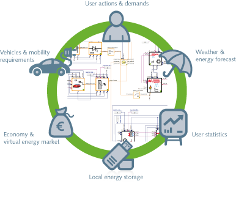
ITI has published a new Modelica based library package for simulating energy efficient buildings. The package helps to calculate the optimal use of energy resources and decentralized energy storage. The simulation enables significant optimization of local energy systems.
The integrated concept of SimulationX allows for the simulation of all energy flows in one system taking not only the building itself into account, but also the inhabitants’ behavior and additional consumption, e.g. electric vehicles. The calculation is based on specific input data, such as local weather conditions, battery size, energy prices and the inhabitants’ life style. The ready-to-use elements are grounded on real-world data. Additionally, a variety of input data can be specified individually, e.g. consumer demands, and electric mobility.
Thanks to phenomenological models, parameters are easy to use, and modeling is intuitively understandable. Neither is it necessary to formulate further differential equations or complex control strategies, nor do real systems have to be abstracted as mathematical calculation models.
Basic element categories:
- ambient conditions
- thermal plugs and electrical plugs
- stationary battery and heat storage
- vehicle
- building
- heating system and domestic water supply
- combined heat and power unit, condensing boiler
- heat pump and solar thermal
- micro wind and photovoltaics
Simulations allow dynamic stress tests and cost calculations. Engineers are able to compare different system configurations, e.g. regarding energy and life cycle costs (incl. investment, consumption, subsidies, degradation and maintenance). The system layout can be used as plant model for testing energy management algorithms during a simulation.
The COM interface provides access to external controls and efficient post processing options. Consequently, huge datasets from long-term measurements can be reduced and calculations accelerated.
For more information please contact kehrer@itisim.com or visit www.simulationx.com/green-building.
This article is provided by Christian Kehrer (ITI GmbH)
Vendor News
Wolfram SystemModeler Released
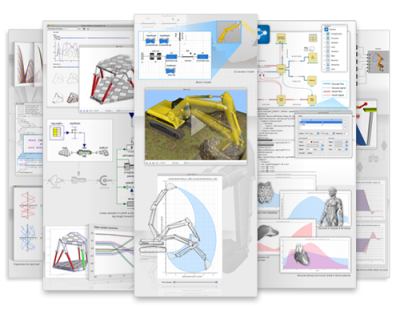
May 23, 2012 the Wolfram Group announced the release of Wolfram SystemModeler—the high-fidelity modeling environment that uses versatile symbolic components and computation to drive design efficiency and innovation.
SystemModeler was previously known as MathModelica and has been substantially improved for this release, which includes:
- Support for Modelica Standard Library Version 3.1 as well as built-in library and tools for systems biology modeling
- Dramatically improved documentation of built-in model libraries. WYSIWYG editing of embedded HTML documentation and improved model and experiment publishing feature
- General improvements of the modeling interface including faster browsing of model libraries, hierarchical browsing of models, and automatic generation of hierarchical models
- 3D real-time animations using DXF and OBJ files.
- Dynamic state selection is now supported, including full configurability at model or package levels
- Generic TCP/IP-based communication interface for connecting simulations with other applications
- New Wolfram SystemModeler Link™ package for connecting Mathematica® to SystemModeler allows to
- Automatically execute parallelized parameter sweeps
- Possibility to compute parameter sensitivities for model calibration and optimization
- Full access to Modelica model data, including equations, variables, parameters, etc
- Full integration with Mathematica control design features, including direct support for model linearization typically used for control design
- direct support for finding steady-state or equilibrium states for models
Learn more, download free trials and examples at www.wolfram.com/system-modeler/
This article is provided by Jan Brugård (MathCore)
FMI Toolbox for MATLAB 1.4

The FMI Toolbox for MATLAB® by Modelon enables easy to use integration of physical models developed in state of the art modeling tools in the MATLAB®/Simulink environment. The toolbox relies on the open FMI standard and is ideal for control systems development.
The FMI toolbox for MATLAB® links state of the art Modelica-compliant tools, including AMESim, Dymola and SimulationX, to the MATLAB®/Simulink environment.
Key features:- FMI for Model Exchange and FMI for Co-Simulation import into MATLAB® scripts
- FMI for Model Exchange and FMI for Co-Simulation import into Simulink using an FMU blockset
- Set model parameter values from MATLAB® scripts
- Improved performance in XML handling
- New and flexible mechanisms for setting parameters in Simulink blocks from MATLAB scripts
The FMI toolbox has been tested extensively with large FMU’s in industrial contexts, and with FMU’s of different Modelica tools as FMI export capabilities are supported by a growing number of tool vendors.
This article is provided by Johan Åkesson (Modelon)
JModelica.org 1.8
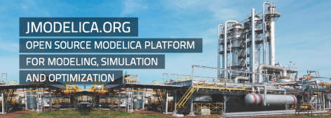
JModelica.org is an extensible Modelica-based open source platform for optimization, simulation and analysis of complex dynamic systems. The main objectives of the project are to create an industrially viable open source Modelica environment, while offering a flexible platform serving as a virtual lab for algorithm development and research. JModelica.org also provides a platform for technology transfer, where industrially relevant problems can inspire new research and where state of the art algorithms can be propagated from academia into industrial use.
Highlights of JModelica.org 1.8:- Improved Modelica compliance of the compiler front-end, including support for if equations and inner/outer declarations.
- Optimized performance and memory utilization of the compiler front-end.
- A new state selection algorithm with support for user defined state selections.
- A new function inlining algorithm for conversion of algorithmic functions into equations. The algorithm is described in the paper Function Inlining in Modelica Models
- Improvements to the CasADi-based collocation optimization algorithm, including support for terminal constraints.
This article is provided by Johan Åkesson (Modelon)
FMI Add-in for Microsoft Excel 1.0
FMI Add-in for Microsoft Excel® by Modelon links state of the art Modelica-compliant tools, including Dymola and SimulationX, to Microsoft Excel® through the FMI standard. Inputs and parameters of models imported into Excel® are conveniently configured by standard spread sheet operations. Key features
- Import and simulation of Functional Mock-up Units (FMUs) in Microsoft Excel®
- Parameter sweeps and sensitivity analysis
- Batch simulation and design space exploration
- Support for FMI for Model Exchange 1.0 (initialization of models)
- Support for FMI for Co-Simulation 1.0 (initialization and dynamic simulation)
This article is provided by Johan Åkesson (Modelon)
FMI Library 1.0
FMI Library (FMIL) is a software package written in C that enables integration of Functional Mock-up Units (FMUs) import in applications. The package provides a C API for interacting with all parts of FMUs, including unzipping, loading of shared object files (DLLs) contained in FMUs, as well as parsing of XML model metadata files. The user is thereby relieved from managing the details of FMU interaction, which significantly reduce the time required to implement FMU import capabilities.
FMI Library is suitable in contexts where FMUs need to be integrated in existing applications or in custom software projects.
Key features:
- Full support for FMI for Model Exchange 1.0
- Full support for FMI for Co-simulation 1.0
- A unified C API encapsulating all parts of the FMU interaction, including ZIP, DLL and XML management
- Build system based on CMake, enabling generation of native build scripts (MSVC on Windows, GCC on Linux)
- Extensive API documentation in HTML format
FMI Library is the basis of the official FMI Compliance Checker (available summer 2012) provided by the Modelica Association.
FMI Library is released under the BSD license.
This article is provided by Johan Åkesson (Modelon)
Advanced Interpolation with OpenModelica 1.8.1
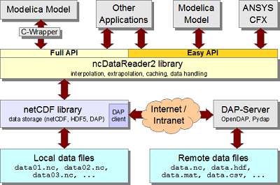
OpenModelica is an open-source model-based cyber-physical mathematical modeling, architectural description, and simulation environment intended for industrial and academic usage. Its long-term development is supported by a non-profit organization - the Open Source Modelica Consortium (OSMC), www.openmodelica.org.
The advanced interpolation and data access package ncDataReader2 is available for easy usage from Modelica models together with OpenModelica 1.8.1. This offers a number of advantages:
- This is very fast, even with large amounts of data. For example, a test application with OpenModelica on an 840 MB data file including initialization, data reading, one million interpolations, numerical integration and writing of the results finished in 5 seconds on a standard dual-core laptop.
- Several interpolation and extrapolation methods are included such as Akima (cubic), linear, discrete, and smoothed steps.
- Load on demand, intelligent tunable caching mechanism, offset and scaling of values for unit conversion and memory-efficient storage.
- Data can be accesses either locally from a file or via a URI from a server using the highly efficient DAP network protocol.
- Possiblity of easy access to the same data source by several simulation applications.
The ncDataReader2 has been used, evaluated, and adapted for use with OpenModelica by Christoph Nytsch-Geusen et al in the context of the BuildingSystems application library. It can be used with OpenModelica 1.8.1 but is not part of that release.
The OpenModelica development work is organized by the expanding Open Source Modelica Consortium, currently 43 organizations.
For more information on OpenModelica, see www.openmodelica.org.
This article is provided by Peter Fritzson (Linköping University)
Dymola 2013 Available
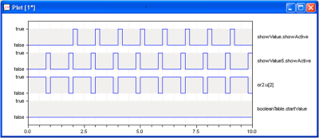 Dymola 2013, released in May, offers a range of new features and improved usability.
- Model editing
- Easier to compose and re-compose models by reusing existing components to create new models. Select components - create model - automatic re-connect to new component.
Comments and documentation can be written in your native language, for example, Japanese. - Portability and diagnostics
- Choose between strict Modelica 3 compatibility checking or extended backward model compatibility.
Improved error messages and more structured presentation makes model debugging more effective. - Environment and setup
- Better post-processing setup and possibility to disable export options inside Dymola.
Improved layout when plotting Boolean and enumeration signals.
Updated model libraries.
Simulink interface and FMI support on Linux.
This article is provided by Dag Brück (Dassault Systèmes AB, Lund)
Maplesoft Adds Consulting Services to its Portfolio
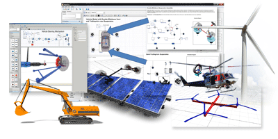
Maplesoft has announced the addition of professional consulting services to strengthen its portfolio of offerings for system-level modeling and simulation. Maplesoft consultants are available to help engineers reduce development time and risk, as well as create better products.
Maplesoft has extensive expertise in system-level modeling and simulation, covering a wide range of applications and industries. Maplesoft’s Modelica-based consulting services include model development and simulation services, analysis and tool development, real-time plant-model code generation, and training. Maplesoft specializes in the modeling, simulation, and optimization of complex multidomain systems. Consultants will draw on the expertise gained from past and current consulting projects, which include the development of a specialized driveline component library, multiple projects with a leading automotive manufacturer to help them move to a model-based development process, the development of battery models for EV and HEV systems, vibration analysis of drivetrain models for marine drivelines, and multiple projects involving the development of custom components and solutions in the areas of robotics, mechatronics, motion control, aerospace, power and energy.
The open, object-oriented, physical modeling language, Modelica, is at the core of most of Maplesoft’s development projects. Modelica-based tools have experienced wide-spread adoption over the past two decades. Maplesoft is committed to supporting the Modelica open standard and the development of a common pool of knowledge that can assist engineering organizations to efficiently develop innovative processes and products that will ultimately benefit everyone. Because Modelica components have been developed and validated by industry, engineers can have confidence that their models will provide an accurate representation of the system.
“For some time now, our customers have been telling us that they have gaps in their resources when it comes to implementing system-level modeling and simulation projects, and this initiative is a direct response to that request,” said Paul Goossens, Vice President, Applications Engineering, Maplesoft. “We believe our Modelica-based expertise will help customers with the smooth implementation of modeling strategies, reduce risk of project slip or failure, and maximize return on investment.”
Maplesoft uses the Modelica-based modeling tool MapleSim for most development projects, though they also offer expertise in other tools. The combination of Modelica’s system-level modeling language with the symbolic computational power of MapleSim enables a level of understanding, power, and extensibility that is not possible with “black-box” tools. Through its advanced automatic code-generation technologies, Maplesoft can help deploy models to the rest of the toolchain, including in-house tools, MATLAB® and Simulink®, optimization tools, co-simulation platforms, and real-time systems for hardware-in-the-loop (HIL) testing.
This article is provided by Tina George (Maplesoft)
In this Newsletter, the following registered trademarks are referenced:
Dymola® is a registered trademarks of Dassault Systèmes.
Maplesoft® and MapleSim® are registered trademarks of Waterloo Maple Inc.
Modelica® is a registered trademark of the Modelica Association.
SimulationX® is a registered trademark of ITI GmbH.
Excel® is a registered trademark of Microsoft.